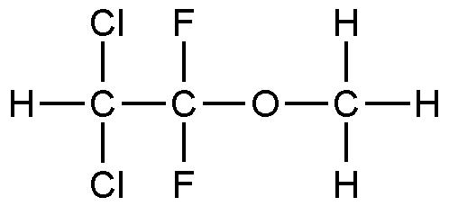

Prof Mohamad S Takrouri dari Departemen Anestesi Universitas King Khalid Riyadh mengungkap, ikatan eter (-0-) merupakan bahan dasar yang digunakan untuk anestesi (diethyl, eter, methoxyflurane, enflurane, fluroxene, forane). Lagi-lagi peradaban Barat juga mengklaim sebagai penemu zat yang menjadi bahan utama untuk anestesi.
Adalah Velerius Cordus yang mengaku sebagai penemu ikatan eter. Namun, Amstrong Davidson meragukan klaim Cordus itu.
"Saya tak yakin bahwa Cordus yang meninggal di 1544 pantas disebut sebagai penemuan ikatan eter,'' papar Davidson. Keraguan Davidson ternyata benar.Faktanya, beberapa abad sebelum Cordus menemukan eter, dokter Muslim di era kejayaan Islam telah berhasil menemukannya. Menurut Prof Taha, penemu eter radikal (-0-) itu adalah Al-Kindi.
Ilmuwan Muslim itu berhasil melakukan penyaringan alkohol. Bahkan, sebenarnya nama alkohol pun berasal dari bahasa Arab, yakni 'Al-goul' yang berarti sesuatu yang berada di bawah sadar. Alkisah, pada zaman keemasan Islam di Kudus Turan beredar 'anggur surga' yang bebas al-goul. Orang-orang meminumnya tak mabuk. "Kata alkohol adalah bentuk jamak dari Al-kuhl,'' ungkap MY Hashimi (1968).
Selain itu, terdapat bukti bahwa Sulfuric Acid telah ditemukan oleh al-Razi. Senyawa ini digunakan untuk menyuling alkohol. Mengingat bahwa diethyl eter dapat dihasilkan oleh ekstraksi air dari alkohol (2C2H5OH + H2S04 ------- C2H5 + H2O-O-C2H5 + H2 SO4), terdapat kemungkinan bahwa umat Islam telah lama menguasai pembuatan bahan yang digunakan untuk anestesi.
Dalam dunia kedokteran dikenal dua jenis obat untuk menghilangkan nyeri, yaitu analgetik dan anestesi. Analgetik adalah obat pereda nyeri tanpa disertai hilangnya perasaan secara total. Seseorang yang mengonsumsi analgetik tetap berada dalam keadaan sadar. Analgetik tidak selalu menghilangkan seluruh rasa nyeri, tetapi selalu meringankan rasa nyeri.
Beberapa jenis anestesi menyebabkan hilangnya kesadaran, sedangkan jenis yang lainnya hanya menghilangkan nyeri dari bagian tubuh tertentu dan pemakainya tetap sadar. Selain itu, terdapat beberapa tipe anestesi, antara lain, pembiusan total yang mampu menghilangkan kesadaran total dan pembiusan lokal yang dapat menghilangkan rasa sakit pada bagian tubuh tertentu yang diinginkan.
Serta, pembiusan regional, yakni hilangnya rasa pada bagian yang lebih luas dari tubuh oleh blokade selektif pada jaringan spinal atau saraf yang berhubungan dengannya. Pembiusan lokal atau anestesi lokal adalah salah satu jenis anestesi yang hanya melumpuhkan sebagian tubuh manusia dan tanpa menyebabkan manusia kehilangan kesadaran.